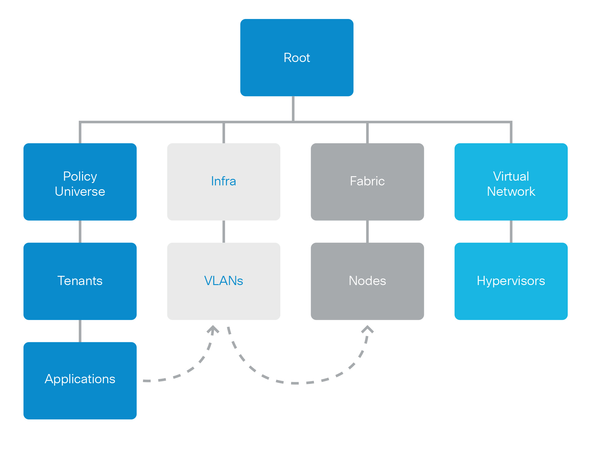
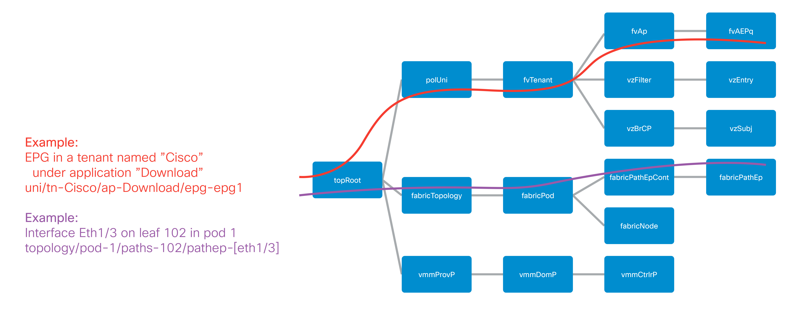
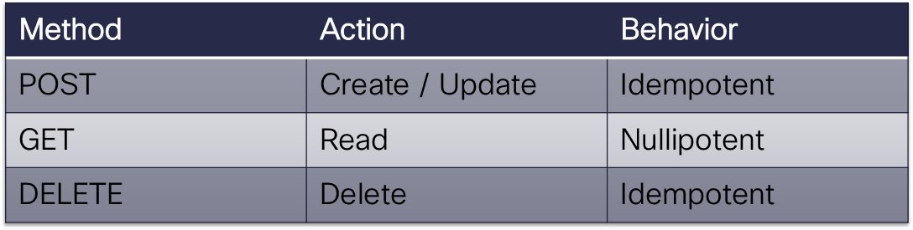
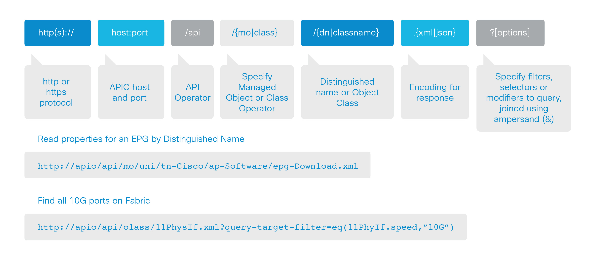
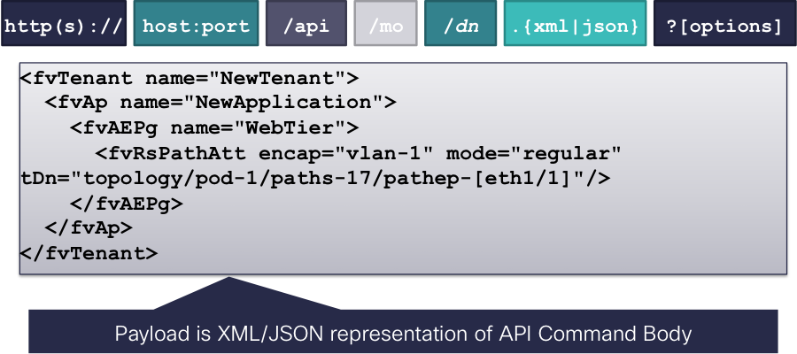
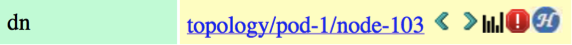
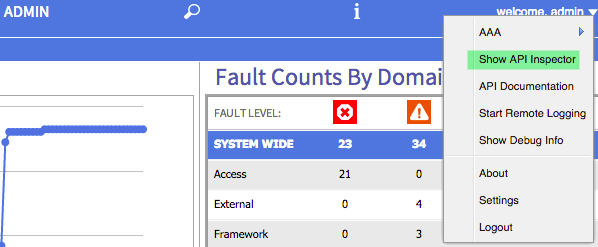
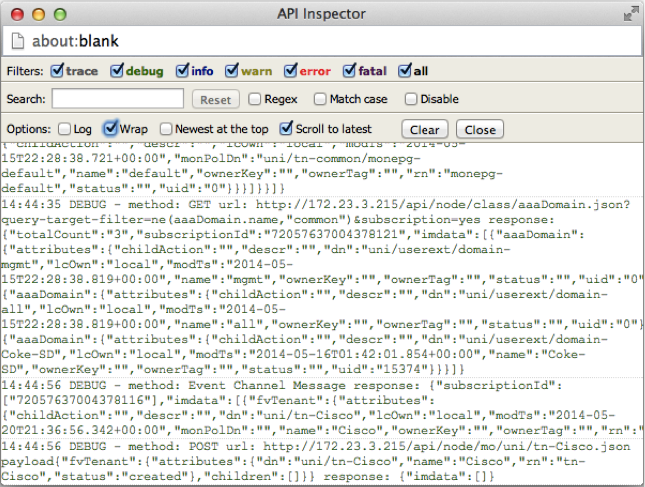
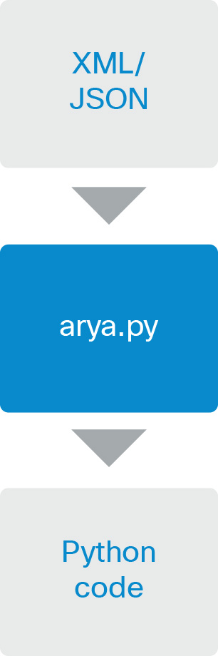

REST Interface¶
Overview¶
This chapter will explain the basic concepts necessary to begin effectively utilizing ACI programmatic features for troubleshooting. This begins with recapitulating an overview the ACI Object Model, which describes how the system interprets configuration and represents state to internal and external entities. The REST API provides the means necessary to manipulate the object store, which contains the configured state of APIC using the object model as the metadata definition. The APIC SDK leverages the REST API to read and write the configuration of APIC, using the object model to describe the current and desired state.
ACI provides a new approach to data center connectivity, innovative and different from the standard approach taken today, but astonishingly simple in its elegance and capacity to describe complete application topologies and holistically manage varying components of the data center. With the fabric behaving as a single logical switch, problems like managing scale, enabling application mobility, collecting uniform telemetry points and configuration automation are all solved in a straightforward approach. With the controller acting as a single point of management, but not a single point of failure, clustering offers the advantages of managing large data centers but none of the associated fragmented management challenges.
The controller is responsible for all aspects of configuration. This includes configuration for a number of key areas:
- Policy: defines how applications communicate, security zoning rules, quality of service attributes, service insertion and routing/switching
- Operation: protocols on the fabric for management and monitoring, integration with L4-7 services and virtual networking
- Hardware: maintaining fabric switch inventory and both physical and virtual interfaces
- Software: firmware revisions on switches and controllers
With these pieces natively reflected in the object model, it is possible to change these through the REST API, further simplifying the process by utilizing the SDK.
ACI Object Model¶
Data modeling is a methodology used to define and analyze data requirements needed to support a process in relation to information systems. The ACI Object Model contains a modeled representation of applications, network constructs, services, virtualization, management and the relationships between all of the building blocks. Essentially, the object model is an abstracted version of the configuration and operational state that is applied individually to independent network entities. As an example, a switch may have interfaces and those interfaces can have characteristics, such as the mode of operation (L2/L3), speed, connector type, etc. Some of these characteristics are configurable, while others are read-only, however all of them are still properties of an interface.
The object model takes this analytical breakdown of what defines a thing in the data center, and carefully determines how it can exist and how to represent that. Furthermore, since all of these things do not merely exist, but rather interact with one another, there can be relationships within the model, which includes containment hierarchy and references. An interface belongs to a switch, therefore is contained by the switch, however a virtual port channel can reference it. A virtual port channel does not necessarily belong to a single switch.
The objects in the model can also utilize a concept called inheritance, where an interface can be a more generic concept and specific definitions can inherit characteristics from a base class. For example, a physical interface can be a data port or a management port, however both of these still have the same basic properties, so they can inherit from a single interface base class. Rather than redefine the same properties many times, inheritance can be used to define them in one base class, and then specialize them for a specific child class.
{kind=link}
All of these configurable entities and their structure are represented as classes. The classes define the entities that are instantiated as Managed Objects (MO) and stored within the Management Information Tree (MIT). The general concept is similar to the tree based hierarchy of a file system or the SNMP MIB tree. All classes have a single parent, and may contain multiple children. This is with exception to the root of the tree, which is a special class called topRoot. Within the model there are different packages that act as logical groupings of classes, so that similar entities are placed into the same package for easier navigation of the model. Each class has a name, which is made from the package and a class name, for example “top” is the package and “Root” is the class: “topRoot”; “fv” is the package (fabric virtualization) and “Tenant” is the class: “fvTenant”. A more generic form of this would be:
Package:classname == packageClassName
Managed objects make up the management information tree, and everything that can be configured in ACI is an object. MOs have relative names (Rn), which are built according to well-defined rules in the model. For the most part, the Rn is a prefix prepended to some naming properties, so for example the prefix for an fvTenant is “tn-“ and the naming property for a fvTenant would be the name, “Cisco”. Combining these gives an Rn of tn-Cisco for a particular MO. Relative names are unique within their namespace, meaning that within the local scope of an MO, there can only ever be one using that name. By using this rule paired with the tree-based hierarchy of the MIT, concatenate the relative names of objects to derive their Distinguished Name (Dn), providing a unique address in the MIT for a specific object. For example, an fvTenant is contained by polUni (Policy Universe), and polUni is contained by topRoot. Concatenating the Rns for each of these from top down yields a Dn of “uni/tn-Cisco”. Note that topRoot is always implied and does not appear in the Dn.
{kind=link}
Queries¶
With all of this information neatly organized, it’s possible to perform a number of tree based operations, including searching, traversal, insertion and deletion. One of the most common operations is a search to query information from the MIT.
The following types of queries are supported:
- Class-level query: Search the MIT for objects of a specific class
- Object-level query: Search the MIT for a specific Dn
Each of these query types supports a plethora of filtering and subtree options, but the primary difference is how each type is utilized.
A class-based query is useful for searching for a specific type of information, without knowing the details, or not all of the details. Since a class-based query can return 0 or many results, it can be a helpful way to query the fabric for information where the full details are not known. A class-based query combined with filtering can be a powerful tool to extract data from the MIT. As a simple example, a class-based query can be used to find all fabric nodes that are functioning as leafs, and extract their serial numbers, for a quick way to get a fabric inventory.
An object based (Dn based) query returns zero or 1 matches, and the full Dn for an object must be provided for a match to be found. Combined with an initial class query, a Dn query can be helpful for finding more details on an object referenced from another, or as a method to update a local copy of information.
Both query types support tree-level queries with scopes and filtering. This means that the MIT can be queried for all objects of a specific class or Dn, and then retrieve the children or complete subtree for the returned objects. Furthermore, the data sets can be filtered to only return specific information that is interesting to the purpose at hand.
The next section on the REST API covers more details about how to build and execute these queries.
APIC REST API¶
This section provides a brief overview of the REST API, however a more exhaustive description can be found in the Cisco APIC REST API User Guide document on Cisco.com
The APIC REST API is a programmatic interface to the Application Policy Infrastructure Controller (APIC) that uses a Representational State Transfer (REST) architecture. The API accepts and returns HTTP or HTTPS messages that contain JavaScript Object Notation (JSON) or Extensible Markup Language (XML) documents. Any programming language can be used to generate the messages and the JSON or XML documents that contain the API methods or managed object (MO) descriptions.
The REST API is the interface into the MIT and allows for manipulation of the object model state. The same REST interface is utilized by the APIC CLI, GUI and SDK, so that whenever information is displayed it is read via the REST API and when configuration changes are made, they are written via the REST API. In addition to configuration changes, the REST API also provides an interface by which other information can be retrieved, including statistics, faults, audit events and even provide a means of subscribing to push based event notification, so that when a change occurs in the MIT, an event can be sent via a Web Socket.
Standard REST methods are supported on the API, which includes POSTs, GETs and DELETE operations through the HTTP protocol. The following table shows the actions of each of these and the behavior in case of multiple invocations.
{kind=link}
Figure 3: REST HTTP(S) based CRUD methods
The POST and DELETE methods are idempotent meaning that they have no additional effect if called more than once with the same input parameters. The GET method is nullipotent, meaning that it can be called 0 or more times without making any changes (or that it is a read-only operation).
Payload Encapsulation¶
Payloads to and from the REST interface can be encapsulated via either XML or JSON encodings. In the case of XML, the encoding operation is simple: the element tag is the name of the package and class, and any properties of that object are specified as attributes on that element. Containment is defined by creating child elements. The following example shows a simple XML body defining a tenant, application profile, EPG and static port attachment.
XML Managed Object Definition:
<polUni>
<fvTenant name="NewTenant">
<fvAp name="NewApplication">
<fvAEPg name="WebTier">
<fvRsPathAtt encap="vlan-1" mode="regular" tDn="topology/pod-1/paths-101/pathep-[eth1/1]"/>
</fvAEPg>
</fvAp>
</fvTenant>
</polUni>
For JSON, encoding requires definition of certain entities to reflect the tree based hierarchy, however is repeated at all levels of the tree, so is fairly simple once initially understood.
- All objects are described as JSON dictionaries, where the key is the name of the package and class, and the value is another nested dictionary with two keys: attribute and children.
- The attribute key contains a further nested dictionary describing key/value pairs defining attributes on the object The children key contains a list that defines all of the child objects.
- The children in this list will be dictionaries containing any nested objects, that are defined as described in (a)
The following example shows the XML defined above, in JSON format.
JSON Managed Object Definition:
{
"polUni": {
"attributes": {},
"children": [
{
"fvTenant": {
"attributes": {
"name": "NewTenant"
},
"children": [
{
"fvAp": {
"attributes": {
"name": "NewApplication"
},
"children": [
{
"fvAEPg": {
"attributes": {
"name": "WebTier"
},
"children": [
{
"fvRsPathAtt": {
"attributes": {
"mode": "regular",
"encap": "vlan-1",
"tDn": "topology/pod-1/paths-101/pathep-[eth1/1]"
}
}
}
]
}
}
]
}
}
]
}
}
]
}
}
Both the XML and JSON have been pretty printed to simplify visual understanding. Practically, it would make sense to compact both of them before exchanging with the REST interface, however it will make no functional impact. In the cases of the object examples shown here, the compacted XML results in 213 bytes of data, and the compacted JSON results in 340 bytes of data.
Read Operations¶
Once the object payloads are properly encoding as XML or JSON, they can be used in Create, Read, Update or Delete (CRUD) operations on the REST API.
{kind=link}
Since the REST API is HTTP based, defining the URI to access a certain resource type is important. The first two sections of the request URI simply define the protocol and access details of the APIC. Next in the request URI is the literal string “/api” indicating that the API will be invoked. Generally read operations will be for an object or class, as discussed earlier, so the next part of the URI defines if it will be for a “mo” or “class”. The next component defines either the fully qualified Dn being queried for object based queries, or the package and class name for class-based queries. The final mandatory part of the request URI is the encoding format, either .XML or .JSON. This is the only method by which the payload format is defined (Content-Type and other headers are ignored by APIC).
The next optional part of the request URI is the query options, which can specify various types of filtering, which are explained extensively in the REST API User Guide.
In the example shown above, first an object level query is shown, where an EPG named Download is queried. The second example shows how a query for all objects with classl1PhysIf can be queried, and the results filtered to only show those where the speed attribute is equal to 10G. For a complete reference to different objects, their properties and possible values please refer to the Cisco APIC API Model Documentation.
Write Operations¶
Create and update operations to the REST API are actually both implemented using the POST method, so that if an object does not already exist it will be created, and if it does already exist, it will be updated to reflect any changes between its existing state and desired state.
Both create and update operations can contain complex object hierarchies, so that a complete tree can be defined within a single command, so long as all objects are within the same context root and they are under the 1MB limit for data payloads to the REST API. This limit is in place to guarantee performance and protect the system under high load.
The context root helps defines a method by which APIC distributes information to multiple controllers and ensures consistency. For the most part it should be transparent to the user, though very large configurations may need to be broken up into smaller pieces if they result in a distributed transaction.
{kind=link}
Create/Update operations follow the same syntax as read operations, except that they will always be targeted at an object level because changes cannot be made to every object of a specific class. The create/update operation should target a specific managed object, so the literal string “/mo” indicates that the Dn of the managed object will be provided, followed next by the actual Dn. Filter strings can be applied to POST operations, to retrieve the results of a POST in the response, for example, pass the rsp-subtree=modified query string to indicate that the response should include any objects that have been modified by the POST.
The payload of the POST operation will contain the XML or JSON encoded data representing the managed object defining the API command body.
Authentication¶
Authentication to the REST API for username/password-based authentication uses a special subset of request URIs, including aaaLogin, aaaLogout and aaaRefresh as the Dn target of a POST operation. Their payloads contain a simple XML or JSON payload containing the MO representation of an aaaUser object with attributes name and pwd defining the username and password, for example: <aaaUser name=’admin’ pwd=’insieme’/>. The response to the POSTs will contain an authentication token as both a Set-Cookie header as well as an attribute to the aaaLogin object in the response named token, for which the XPath is /imdata/aaaLogin/@token if encoded as XML. Subsequent operations on the REST API can use this token value as a Cookie named “APIC-cookie” to have future requests authenticated.
Filters¶
The REST API supports a wide range of flexible filters, useful for narrowing the scope of a search to allow for information to be more quickly located. The filters themselves are appended as query URI options, started with a question mark (?) and concatenated with an ampersand (&). Multiple conditions can be joined together to form complex filters
The Cisco APIC RESTful API User Guide covers in great detail the specifics of how to use filters, their syntax, and provides examples. Some of the tools covered below, can be used to learn to build a query string, as well as uncover those being used by the native APIC interface, and build on top of those to create advanced filters.
Browser¶
The MIT contains multitudes of valuable data points. Being able to browse that data can expose new ways to use the data, aid in troubleshooting, and inspect the current state of the object store. One of the available tools for browsing the MIT is called “visore” and is available on the APIC. Visore supports querying by class and object, as well as easily navigating the hierarchy of the tree.
In order to access visore, open https://<apic>/visore.html in a web browser, and then authenticate with credentials for the APIC. Once logged in, an initial set of data will be visible, however searching for information using filtered fields will also be available at the top of the screen. Within the “Class or DN” text input field, enter the name of a class, e.g. “fabricNode” or “topology/pod-1/node-1”; press the “Run Query” button and press OK when prompted to continue without a filter. The results will be provided in either a list of nodes on the fabric, or information for the first APIC depending on the input string.
In the list of attributes for the objects, the Dn will have a set of icons next to it.
{kind=link}
The green arrows can be used for navigating up and down the tree, where pressing the left arrow will navigate to the parent of the object and the right arrow will navigate to a list of all children of the current object. The black staggered bars will display any statistics that are available for the object. If none are available, the resulting page will not contain any data. The red octagon with exclamation point will show any faults that are present on the current object and finally the blue circle with the letter H will show the health score for the object, if one is available.
These tools provide access to all types of information in the MIT, and additionally use Visore to structure query strings. For example, entering “fabricNode” as the class, “id” for the property and “1” in the field labeled Val1, leaving the Op value to “==”, and execute the query to filter the class results on just those with an id equal to 1. Note that Visore does not contain the complete list of filters supported by the REST API, however can be a useful starting point.
Visore provides the URI of the last query and the response body, and the data can be seen not only in a tabular format, but also as the natively encoded payload. This allows for quick access to determine the request URI for a class or Dn based query, and also see what the XML body of the response looks like.
API Inspector¶
All operations that are made through the GUI will invoke REST calls to fetch and commit the information being accessed. The API Inspector further simplifies the process of examining what is taking place on the REST interface as the GUI is navigated by displaying in real time the URIs and payloads. When new configuration is committed, API inspector will display the resulting POST requests, and when information is displayed on the GUI, the GET request will be displayed.
To get started with API inspector, access it from the account menu, visible in the top right of the APIC GUI. Click on “welcome, <username>” and then select the “Show API Inspector” option, as shown in the figure below.
{kind=link}
Once the API Inspector is brought up, timestamps will be seen along with the REST method, URIs, and payloads. Occasional updates may also be seen in the list as the GUI refreshes subscriptions to data being shown on the screen.
{kind=link}
From the example output shown above, it can be seen that the last logged item has a POST with the JSON payload containing a tenant named Cisco, and some attributes defined on that object.
POST
url: http://172.23.3.215/api/node/mo/uni/tn-Cisco.json
{
"fvTenant": {
"attributes": {
"name": "Cisco",
"status": "created"
},
"children": []
}
}
ACI Software Development Kit (SDK)¶
The ACI Python SDK is named Cobra, and is a Python implementation of the API that provides native bindings for all the REST function. Cobra also has a complete copy of the object model so that data integrity can be ensured, and provides methods for performing lookups and queries and object creation, modification and deletion, which match the REST methods leveraged by the GUI, as well as those that can be found using API Inspector. As a result, policy created in the GUI can be used as a programming template for rapid development.
The installation process for Cobra is straightforward, using standard Python distribution utilities. It is currently distributed as an egg and can be installed using easy_install. Please reference the APIC Python API Documentation for full details on installing Cobra on a variety of operating systems.
Establishing a Session¶
The first step in any code that will use Cobra is to establish a login session. Cobra currently supports username and password based authentication, as well as certificate-based authentication. For this example, we’ll use username and password based authentication:
import cobra.mit.access
import cobra.mit.session
apicUri = 'https://10.0.0.2'
apicUser = 'username'
apicPassword = 'password'
ls = cobra.mit.session.LoginSession(apicUri, apicUser, apicPassword)
md = cobra.mit.access.MoDirectory(ls)
md.login()
This will provide an MoDirectory object named md, that is logged in and authenticated to an APIC. If for some reason this script is unable to authenticate, the script will get a cobra.mit.request.CommitError exception from Cobra. Once a session is allocated for the script things can move forward.
Working with Objects¶
Utilizing the Cobra SDK to manipulate the MIT generally follows the workflow:
- identify object to be manipulated
- build a request to change attributes, add or remove children
- commit changes made to that object
For example, to create a new Tenant, where the tenant will be placed in the MIT must first be identified. In this case it will be a child of the Policy Universe object:
import cobra.model.pol
polUniMo = cobra.model.pol.Uni('')
With the policy universe Mo object defined, it is possible to create a tenant object as a child of polUniMo:
import cobra.model.fv
tenantMo = cobra.model.fv.Tenant(polUniMo, 'cisco')
Since all of these operations have only resulted in Python objects being created, the configuration must be committed in order to apply it. This can do this using an object called a ConfigRequest. A ConfigRequests acts as a container for Managed Object based classes that fall into a single context, which can all be committed in a single atomic POST.
import cobra.mit.request
config = cobra.mit.request.ConfigRequest()
config.addMo(tenantMo)
md.commit(config)
The ConfigRequest is created, then the tenantMo is added to the request, and finally this is commited through the MoDirectory.
For the above example, in the first step a local copy is built of the polUni object. Since it does not have any naming properties (reflected above by the empty double single-quotes), there is no need to look it up in the MIT to figure out what the full Dn for the object is, since it is always known as the “uni”. If something deeper in the MIT needs to be posted, where the object has naming properties, a lookup needs to be performed for that object. As an example, to post a configuration to an existing tenant, it is possible to query for that tenant, and create objects beneath it.
tenantMo = md.lookupByClass('fvTenant', propFilter='eq(fvTenant.name, "cisco")')
tenantMo = tenantMo[0] if tenantMo else None
The resulting tenantMo object will be of class cobra.model.fv.Tenant, and contain properties such as .dn, .status, .name, etc, all describing the object itself. lookupByClass() returns an array, since it can return more than one object. In this case, the propFilter is specifying a fvTenant with a particular name. For a tenant, the name attribute is a special type of attribute called a naming attribute. The naming attribute is used to build the relative name, which must be unique within its local namespace. As a result of this, it can be guaranteed that what lookupByClass on an fvTenant with a filter on the name will always either return an array of length 1 or None, meaning nothing was found. The specific naming attributes and others can be looked up in the APIC Model Reference document.
Another method to entirely avoid a lookup, is to build a Dn object and make an object a child of that Dn. This will only work in cases where the parent object already exists.
topDn = cobra.mit.naming.Dn.fromString('uni/tn-cisco')
fvAp = cobra.model.fv.Ap(topMo, name='AppProfile')
These fundamentals of interacting with Cobra will provide the building blocks necessary to create more complex workflows that will aid in the process of automating network configuration, troubleshooting and management.
APIC REST to Python Adapter¶
The process of building a request can be time consuming. For example, the object data payload as Python code reflecting the object changes that are desired to be made must be represented. Given that the Cobra SDK is directly modeled off of the ACI Object Model, this means it should be possible to generate code directly from what resides in the object model. As expected, this is possible using a tool developed by Cisco Advanced Services named Arya, short for APIC REST to Python Adapter.
{kind=link}
{kind=link}
In the diagram above, it’s clearly shown how the input that might come from API Inspector, Visore or even the output of a REST query, can be quickly converted into Cobra SDK code, that can then be tokenized and re-used in more advanced ways. Installing Arya is relatively simple and has minimal external dependencies. Arya requires Python 2.7.5 and git installed. The following quick installation steps will install Arya and place it the system python.
git clone https://github.com/datacenter/ACI.git
cd ACI/arya
sudo python setup.py install
After installation of Arya has completed, it is possible to take XML or JSON representing ACI modeled objects and convert them to Python code quickly. For example:
arya.py -f /home/palesiak/simpletenant.xml
Will yield the following Python code:
#!/usr/bin/env python
'''
Autogenerated code using /private/tmp/ACI/arya/lib/python2.7/site-packages/arya-1.0.0-py2.7.egg/EGG-INFO/scripts/arya.py
Original Object Document Input:
<fvTenant name='bob'/>
'''
raise RuntimeError('Please review the auto generated code before ' +
'executing the output. Some placeholders will ' +
'need to be changed')
# list of packages that should be imported for this code to work
import cobra.mit.access
import cobra.mit.session
import cobra.mit.request
import cobra.model.fv
import cobra.model.pol
from cobra.internal.codec.xmlcodec import toXMLStr
# log into an APIC and create a directory object
ls = cobra.mit.session.LoginSession('https://1.1.1.1', 'admin', 'password')
md = cobra.mit.access.MoDirectory(ls)
md.login()
# the top level object on which operations will be made
topMo = cobra.model.pol.Uni('')
# build the request using cobra syntax
fvTenant = cobra.model.fv.Tenant(topMo, name='bob')
# commit the generated code to APIC
print toXMLStr(topMo)
c = cobra.mit.request.ConfigRequest()
c.addMo(topMo)
md.commit(c)
The placeholder raising a RuntimeError must first be removed before this code can be executed, however it is purposely put in place to ensure that any other tokenized values that must be updated are corrected. For example, the APIC IP defaulting to 1.1.1.1 should be updated to reflect the actual APIC IP address. The same applies for the credentials and other possible placeholders.
Note that if the input is XML or JSON that does not have a fully qualified hierarchy, it may be difficult or impossible for Arya to attempt to determine it through heuristics. In this case, a placeholder of “REPLACEME” will be populated with the text. This placeholder will need to be replaced with the correct distinguished names (Dn’s). These Dn’s by querying for the object in Visore, or inspecting the request URI for the object shown in API inspector.
Conclusion¶
With an understanding of how ACI network and application information is represented, how to interact with that data, and a grasp on using the SDK, it is trivial to create powerful programs that can simplify the professional tasks and introduce higher levels of automation. Mastering the MIT, Cobra SDK and leveraging Arya to streamline operational workflows is just the beginning to leveraging ACI in ways that will increase the value to the business and business stakeholders.
Problem Description¶
Errors from the REST API do not generally generate faults on the system. Errors are returned directly to the source of the request. There are logs on the APIC that the request was sent to that can be examined to see what was queried, and if errors occur what may have resulted in that error. In 1.0(1e) the /var/log/dme/log/nginx.bin.log on the APIC will track requests coming to the APIC and show specific types of errors. In later versions the nginx error.log and access.log will be available at /var/log/dme/nginx/.
Symptom 1¶
Message “Connection refused” is presented when trying to connect to APIC over HTTP using the REST API.
{kind=link}
Resolution¶
- HTTPS can be used or the communication policy can be changed to enable HTTP. However, please be aware that that APIC ships in the most secure mode possible.
Symptom 2¶
REST API returns an error similar to, “Invalid DN [Dn] wrong rn prefix [Rn] at position [position]” or “Request failed, unresolved class for [string]”
Verification¶
The REST API uses the Universal Resource Indicator (URI) to try and determine what to either configure (for a POST) or return back to the request (for a GET).
For a GET of a class, if the APIC is unable to resolve that URI back to a valid class the error that the APIC returns is the “unable to resolve the class” error. Please refer back to the APIC Management Information Model Reference documentation to verify the name of the class.
For a GET or POST for a managed object, if the APIC is unable to resolve the distinguished name, the APIC will return the error about an invalid DN and the APIC will specify which Rn is the problem. It is possible use this information to determine which part of the distinguished name has resulted in the failure. Please refer back to the APIC Management Information Model Reference documentation to verify the structure of the distinguished name if needed. It is also possible to use Visore to traverse the object store on the APIC and see which distinguished names exist.
Resolution¶
To use the REST API, a fully qualified distinguished name must be used for either GET requests or POST queries to URI’s starting with “/api/mo/” and the class name when making GET requests to URI’s starting with “api/class.”
Verification¶
The REST API requires that a login is refreshed periodically. When logging in using the aaaLogin request, the response includes a refreshTimeoutSeconds attribute that defines how long the login cookie will remain valid. The cookie must be refreshed using a GET to api/aaaRefresh.xml or api/aaaRefresh.json prior to that timeout period. By default the timeout period is 300 seconds. If the token is not refreshed, it will expire and the REST API will return the token invalid error.
Resolution¶
Refresh the token by using the aaaRefresh API before the token expires or get a new token by simply logging in again.
Symptom 4¶
The REST API returns the error, “Failed to update multiple items in a single operation - request requires distributed transaction. Please modify request to process each item individually”
Verification¶
When a POST transaction is sent to the REST API, ensure that the POST does not contain managed objects from different parts of the management information tree that may belong to different parts of the distributed management information tree that may be managed by different APICs. This can be a rather difficult thing to ensure on the surface if a rather large transaction is being created by just generating a huge configuration and committing it. However, if the POST is limited to objects within the same package it is generally possible to avoid this issue. For example the infraInfra object should not be included when doing a POST to api/uni.xml or api/uni.json for a fvTenant object.
Resolution¶
Break up the REST API POST such that the request does not cover classes outside of packages at equal or higher levels of the management information tree. Please see the APIC Management Information Model Reference documentation for more information about the class hierarchy.
Symptom 5¶
The REST API reports either “incomplete node at line [line number]” or “Invalid request. Cannot contain child [child] under parent [parent]” for POST requests.
Verification¶
The REST API requires that the objects that are sent in a POST are well formed. XML objects simply require that the proper containment rules be followed, the proper attributes be included and the XML is well formed. Managed objects that are contained by other managed objects in the management information tree need to be contained in the same way in the XML POST. For example the following POST would fail because fvAP is cannot be contained by fvAEp:
<?xml version="1.0"?>
<polUni>
<fvTenant name="NewTenant">
<fvAEPg name="WebTier">
<!-- This is wrong -->
<fvAp name="NewApplication" />
<fvRsPathAtt encap="vlan-1" mode="regular" tDn="topology/pod-1/paths-101/pathep-[eth1/1]"/>
</fvAEPg>
</fvTenant>
</polUni>
For JSON POSTs, it becomes a little more difficult because the JSON is basically built from XML and XML attributes become an attributes field, and children become a children array in the JSON. The children and attributes have to be explicitly specified. For example:
{
"polUni": {
"attributes": {},
"children": [
{
"fvTenant": {
"attributes": {
"name": "NewTenant"
}
}
}
]
}
}
However, if the attributes and children specification are not included - the most common situation is that they are not included when there are no attributes, it is easy to forget them in such a case - the REST API will return the error about an incomplete node. This is an example of a poorly formed JSON query:
{
"polUni": {
"fvTenant": {
"attributes": {
"name": "NewTenant"
}
}
}
}
Resolution¶
Ensure that the REST API query is properly formed.
Symptom 6¶
The web server returns a response 200 but along with a body that states an error 400 Bad Request.
Verification¶
This will happen if the header or request sent to the webserver is malformed in such a way that the request cannot be parsed by the web server. For example:
>>> import httplib
>>> conn = httplib.HTTPConnection("10.122.254.211")
>>> conn.request("get", "api/aaaListDomains.json")
>>> r1 = conn.getresponse()
>>> data1 = r1.read()
>>> print r1.status, r1.reason
200
>>> print data1
<html>
<head><title>400 Bad Request</title></head>
<body bgcolor="white">
<center><h1>400 Bad Request</h1></center>
<hr><center>nginx/1.4.0</center>
</body>
</html>
>>>
In this case the method used is “get” - all lower case. The web server the APIC uses requires methods be all upper case, “GET”.
Resolution¶
Ensure that the header and request is not malformed in anyway and conforms to common web standards and practices by enabling debugging on the client side to inspect the headers being sent and received.